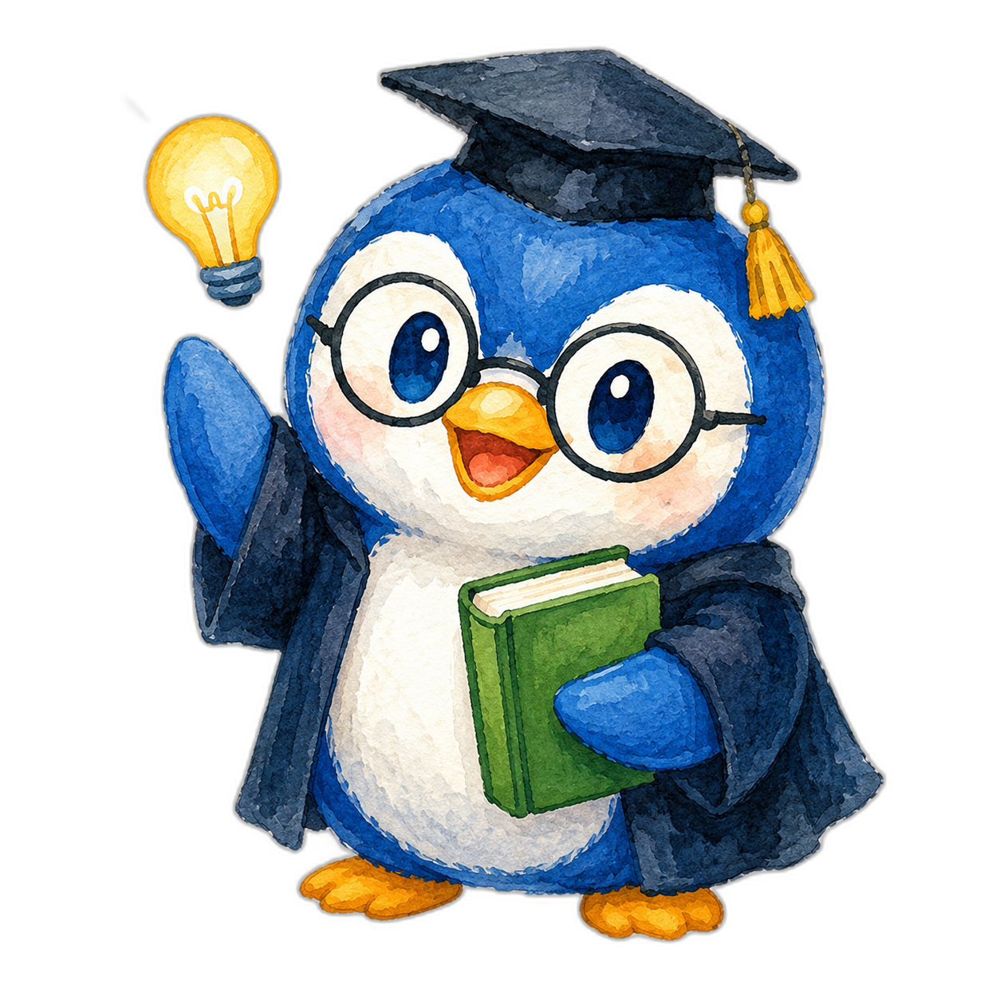

AIの著作権や法律について【AIと著作権の基本ルール編】
AIを安心して活用するために欠かせない「著作権の基本ルール」を、具体例を交えながら学びます。AIが生成したコンテンツに著作権が発生するのかという基本から、ピカチュウやジブリ風といった身近な例で「どこからがNGでどこまでがOKなのか」、そして著作権侵害を避けるための具体的な回避策とツールの利用規約の確認方法まで、初学者でも判断できるようになることを目指します。

この回のポイント- 本講座は「AIと著作権・法律」シリーズの1本目で、まずは著作権の基本ルールを扱う。
- 著作権とは、文章・画像・音楽・動画などの創作物を作った人に与えられる権利。
- AIが生成したコンテンツ自体には、基本的に著作権は発生しない（権利は人間の創作活動に対して認められるため）。
- ただしプロンプト設計や編集作業に創作性があれば、著作権が認められる可能性がある。
- 有名キャラクター名・作品名を直接プロンプトに入れると、既存作品に似たものが生成され著作権侵害の危険がある。
- 生成しただけで違反になるわけではなく、大事なのは生成後に既存作品と似すぎていないか見直すこと。
- 回避のコツは「固有名詞を一般的な表現に置き換える」「既存作品と照合チェックする」「複数パターン作る」の3つ。
- AIツールの利用規約も必ず確認する。海外企業製が多く、規約は定期的に変更されるため継続的なチェックが必要。
 詳しい学習ノート
詳しい学習ノート
この講座の位置づけと全体像
前回の講座では、AIの基本概念と可能性について学びました。今回からは、AIを活用するうえで絶対に知っておかなければならない「法的知識」について解説していきます。AIはとても便利な道具ですが、使い方を誤ると著作権の侵害や規約違反につながることがあるため、技術と同じくらいルールを押さえておくことが大切です。
「AIの著作権や法律について」のシリーズは、大きく3つのパートに分かれています。本講座はその1本目で、最初のパートにあたる「AIと著作権の基本ルール」を中心に扱います。残りの2つのパートでは、それぞれ別の角度から法的な注意点を学んでいきます。
- パート1：AIと著作権の基本ルール（本講座）
- パート2：クライアントワークでの注意点とリスク回避
- パート3：AI活用の禁止事項と安全な使い方のガイドライン
それでは早速、最初のテーマである「AIと著作権の基本的なルール」について、具体例を交えながら見ていきましょう。
そもそも著作権とは何か
AIと著作権の話に入る前に、まず「著作権」そのものをおさらいしておきましょう。著作権とは、文章・画像・音楽・動画などの創作物（人が作り出した作品）を作った人に与えられる権利です。簡単に言えば、自分が作ったものを、他人が無断で使用したり、複製（コピー）したり、改変（作り変えること）したりするのを禁止できる権利だと考えてください。
これは普段の生活でも私たちが感覚的に知っているルールです。たとえば、人気作家が書いた小説を勝手にコピーして販売したり、有名な写真家が撮影した写真を無断で自分のブログに掲載したりすると、著作権侵害になります。こうしたことが「やってはいけないこと」だというのは、皆さんもすでにご存知のとおりです。
AIが生成したコンテンツに著作権は発生するのか
では、ここにAIが関わってくると著作権はどうなるのでしょうか。現在の日本の法律では、次のように整理されています。
まず重要なポイントとして、AIが生成したコンテンツ自体には、基本的に著作権が発生しません。なぜかというと、著作権は人間の創作活動に対して認められる権利だからです。AIは機械なので、AIそのものには著作権が発生しない、というイメージを持っておくとよいでしょう。
ただし、ここで注意が必要なことがあります。プロンプト（AIへの指示文）の設計や、生成後の編集作業に創作性があれば、著作権が認められる可能性があるという点です。つまり「AIを使った＝一切著作権が認められない」と単純に決めつけられるわけではなく、人間がどれだけ創作的に関わったかによって変わってくる、ということです。
なぜ意図せず著作権を侵害してしまうのか（ピカチュウの例）
AIに指示を出すこと自体は、内容によっては何の問題もありません。たとえばAIに「猫の物語を書いて」と指示した場合、これは特に著作権の問題は起きません。一般的なテーマだからです。
ところが、AIに「ピカチュウの画像を生成して」と指示するとどうなるでしょうか。AIは、これまで学習してきたデータの中から、ポケモンの画像を参考にしてしまう可能性があります。その結果、ピカチュウにそっくりなキャラクターが生成されるかもしれません。これを商用利用（ビジネスでお金を稼ぐために使うこと）すると、任天堂の著作権を侵害してしまう危険性があります。
なぜこのようなことが起きるのでしょうか。それは、AIが膨大な量のデータを学習して作られており、その学習データの中に著作権で守られている作品が含まれている場合があるからです。そのため、プロンプトに「ピカチュウ」と書いていなくても、意図せず既存作品に似たものを生成してしまうリスクがあるのです。
これは画像だけの話ではありません。文章でも同じことが起こります。たとえばAIに「ハリーポッターのような魔法学校の物語を書いて」と指示すると、J.K.ローリングさんの作品に似た設定や表現が混ざってしまう可能性があります。
判断が難しいグレーゾーン——OK例とNG例の境界線
ここまで読むと「AIで有名キャラクターを作るのは絶対ダメなんだ」と思うかもしれませんが、実際の判断はとても複雑です。正直なところ、世の中を見渡すと、ポケモンの画像や動画をAIで生成している人はたくさんいます。それでも裁判になっていないケースが多いのには理由があります。
理由のひとつは、権利元が「これは宣伝にもなるから」と見逃している場合があること。もうひとつは、そもそもあまり問題視していないケースがあることです。実際に、ゲーム会社が自分たちのキャラクターをAIで生成して、公式コンテンツとして発信している例もあります。こうした事情があるため、この領域はかなりグレーゾーン（白か黒かはっきりしない曖昧な領域）になっています。
逆に、比較的安全なOK例も見ておきましょう。たとえばAIに「ジブリ風の画像を生成して」と指示するだけなら、直接的に著作権の違反にはなりません。「〜風」という雰囲気を求めること自体は問題にならないのです。
ただし、出力された画像の内容が、既存のジブリ作品そのものだったり、キャラクターやシーンをそっくりそのまま真似していたりすると、著作権や商標権（商品やサービスの目印を守る権利）、パブリシティ権（有名人の名前や姿が持つ経済的価値を守る権利）などに引っかかる可能性があります。つまり「〜風と指示すること」自体ではなく、「出てきた結果が既存作品にそっくりかどうか」が分かれ目になるのです。
生成しただけでは違反ではない——大事なのは生成後の見直し
ここで誤解しないでほしいのは、生成しただけで著作権違反になるわけではない、という点です。あくまで参考程度の雰囲気であれば問題ありませんし、AIに何かを生成させた瞬間に違反が成立するわけではありません。
本当に大事なのは、生成した後に自分の作品をよく見直して、既存のものと似すぎていないかを確認することです。AIを安全に扱っていくためには、生成した画像や文章が、世の中にすでにある作品を丸パクリ（まるごとコピー）していないかを、しっかり自分の目で確認する必要があります。
これが現状の、AIにおける著作権の考え方です。安全にAIを活用するためにも、「著作権に配慮する」という視点を常に持っておきましょう。
著作権リスクを回避する3つの具体策
では、どうやってこのリスクを回避すればよいのでしょうか。結論としては、有名なキャラクター名や作品名を直接プロンプトに含めないことが基本です。そのうえで、次の3つの回避策を意識しましょう。
回避例1は、固有名詞を一般的な表現に置き換えることです。たとえばピカチュウに似た画像を生成したい場合でも、「ピカチュウのような」と書くのではなく、「愛らしい電気を使う超動物キャラクター」のように、一般的な言葉に置き換えて指示するのが大事です。
回避例2は、生成されたコンテンツを既存作品と照合チェックすることです。具体的には、Google画像検索や、コピペチェックツール（文章が他の文章と似ていないかを調べるツール）を活用して、既存の作品に似すぎていないかを確認しましょう。
回避例3は、一度だけ生成して終わりにせず、何パターンか作成して、その中から最もオリジナリティ（独自性）が高いものを採用することです。複数の候補を比べることで、たまたま既存作品に似てしまったものを避けやすくなります。
- 有名なキャラクター名・作品名は直接プロンプトに書かず、一般的な表現に置き換える（例：「ピカチュウのような」→「愛らしい電気を使う超動物キャラクター」）。
- 生成後にGoogle画像検索やコピペチェックツールで、既存作品と似すぎていないか照合する。
- 1回で終わらせず複数パターン生成し、最もオリジナリティの高いものを採用する。
AIツールの利用規約を確認する
著作権の配慮に加えて、AIを活用する際は、各ツールの利用規約も必ず確認するようにしましょう。ChatGPTやClaude、Midjourneyなど、多くのAIツールは海外企業が開発しており、各国で法的解釈が異なります。そのため、そのツールごとの利用規約を確認しておくことが重要です。
確認の方法はシンプルです。たとえばGoogle Chromeなどのブラウザで、ChatGPTの利用規約を調べたい場合は「OpenAI 利用規約」と検索してみましょう。ChatGPTを提供しているのはOpenAIという会社なので、提供元の名前で調べるのがポイントです。検索すると一番上に利用規約のページが出てくるので、その内容をすべて確認しておくと安全です。
とはいえ、利用規約は全部読んでも理解するのが難しいものです。そんなときは、その内容自体をChatGPTにわかりやすい文章へ変えてもらうと、ぐっと理解しやすくなります。あくまで一例ですが、利用規約の文章をすべてコピーして、ChatGPTに「上記のOpenAIの利用規約を、簡潔に小学生でもわかるようにまとめてください」と頼むと、誰でも理解できる文章に置き換えてくれます。
- ブラウザで「OpenAI 利用規約」のように『ツール提供元名＋利用規約』で検索する。
- 一番上に表示される公式の利用規約ページを開き、内容を確認する。
- 難しくて読みにくい場合は、規約の文章をコピーしてChatGPTに貼り付け、「簡潔に小学生でもわかるようにまとめてください」と依頼する。
- わかりやすく要約された内容で、規約の要点を把握する。
 用語メモ
用語メモ
- 著作権
- 文章・画像・音楽・動画などの創作物を作った人に与えられ、無断の使用・複製・改変を禁止できる権利。
- 創作物
- 人が作り出した作品のこと（小説・写真・イラスト・音楽・動画など）。
- 複製
- 作品をそのままコピーすること。
- 改変
- 作品を作り変えたり手を加えたりすること。
- プロンプト
- AIに何をしてほしいかを伝える指示文のこと。
- 商用利用
- ビジネスでお金を稼ぐ目的でコンテンツを使うこと。
- グレーゾーン
- 白か黒か（OKかNGか）がはっきり決まっていない曖昧な領域のこと。
- 商標権
- 商品やサービスの目印（ロゴ・名前など）を守るための権利。
- パブリシティ権
- 有名人の名前や姿などが持つ経済的な価値を守る権利。
- コピペチェックツール
- ある文章が、すでにある他の文章とどれくらい似ているかを調べるツール。
- 利用規約
- サービスを使うときに守るべきルールを、提供元が定めた文書のこと。
- オリジナリティ
- 他にはない独自性のこと。
 よくある質問
よくある質問
著作権について常に最新情報を確かめることが必要ですか？
はい、常に確かめることが必要です。教材は2025年8月時点の情報となります。最新情報は常に変化しますので、案件を受ける際も最新公的情報を随時確認し今後の活用を進めてください。